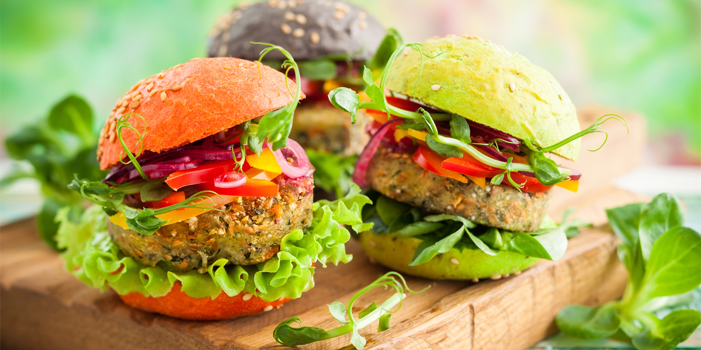
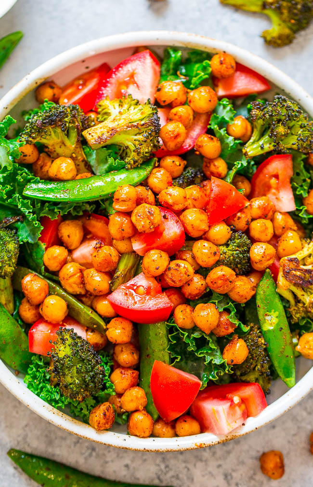
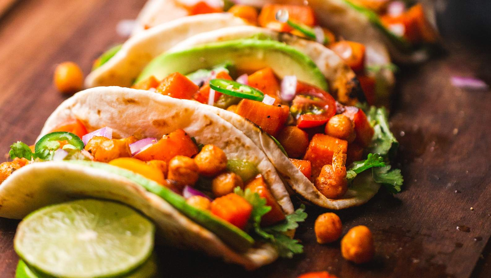
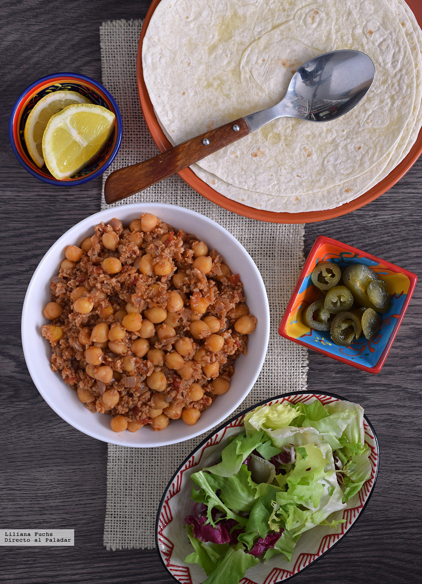
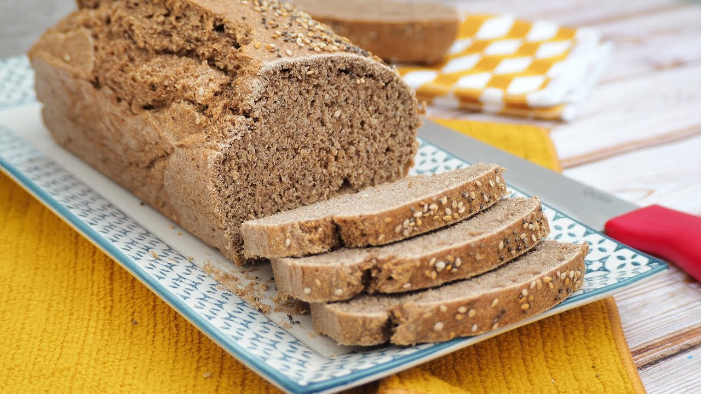

Mini hamburguesas

.jpg)
Mini hamburguesas de aguacate y quinoa
Ingredientes:
- 1 aguacate maduro.
- 60 g de quinoa cocida.
- 50 g de cebolla morada.
- media lima
- 1 pimiento verde picante o guindilla
- cilantro fresco
- ¼ cucharadita de ajo granulado
- pimienta negra molida, sal
- pan rallado
- aceite de oliva virgen extra.
Preparación:
- Cortamos el aguacate por la mitad y sacamos la carne. Picamos la cebolla. Lavamos las hojas de cilantro, secamos y picamos. Lavamos el pimiento verde picante, retiramos el pedúnculo y las semillas y picamos finamente. Mezclamos todos los ingredientes en un cuenco. Añadimos la quinoa cocida, el ajo granulado, el pan rallado, la ralladura de la media lima y su zumo y salpimentamos. Removemos bien hasta obtener una masa homogénea y espesa. Podemos añadir más pan rallado si la notamos demasiado blanda, poco a poco y con cuidado. Dividimos la masa en ocho porciones, les damos forma de mini hamburguesa y empanamos. Freímos en una sartén con un poco de aceite de oliva bien caliente. Volteamos para que se hagan por las dos caras y, cuando estén doradas, las retiramos. Montamos las mini hamburguesas al gusto.
Ensalada

.jpg)
Ensalada vegana de garbanzos tostados y col rizada kale
Ingredientes:
- 420 g de garbanzos hervidos
- 1 cucharada de aceite de oliva virgen extra
- 1/2 cucharadita de sal
- 1 cucharadita de ajo en polvo. Ingredientes para el aderezo:
- 1/2 taza de anacardos crudos, en remojo durante la noche anterior,
- 1/4 de taza de agua
- 2 cucharadas de aceite de oliva virgen extra
- 1 cucharada de zumo de limón
- 1/2 cucharada de mostaza de Dijon
- 1/2 cucharadita de ajo en polvo
- 1 diente de ajo pequeño
- 2 cucharaditas de alcaparras
- 1/2 cucharadita de sal marina de grano fino
- pimienta al gusto Ingredientes para la ensalada:
- 1/4 de taza de anacardos crudos
- 1 cucharada de semillas de sésamo crudas
- 2 cucharadas de semillas de cáñamo sin cáscara
- 1 cucharada de aceite de oliva virgen extra
- 1/2 cucharadita de ajo en polvo
- sal marina de grano fino al gusto
- 4 tazas de col rizada cale troceada
- 8 tazas de lechuga romana troceada.
Preparación:
- Remojamos los anacardos con agua durante la noche, o por lo menos durante un par de horas, enjuagamos y escurrimos. Precalentamos el horno a 180ºC. Enjuagamos y escurrimos los garbanzos, los secamos con papel de cocina, los ponemos en un bol y los aliñamos con aceite, sal y ajo en polvo, removemos para que se impregnen bien. Los repartimos sobre una bandeja de horno y los tostamos unos 20 minutos, removiendo de vez en cuando para que se tuesten. Una vez dorados los dejamos enfriar. Ponemos los ingredientes del aderezo en un robot de cocina y los picamos para conseguir la consistencia de una salsa espesa. Limpiamos el robot de cocina y trituramos los anacardos, las semillas de sésamo, las semillas de cáñamo, el aceite de oliva, el ajo en polvo y la sal. Lavamos la lechuga y la col, las escurrimos y las troceamos al gusto. Las colocamos en un bol grande, añadimos el aderezo y revolvemos para que se mezcle todo. Por último agregamos la picada de anacardos y los garbanzos tostados.
Tacos


Preparación:
Ingredientes:
- 1 cebolla morada
- 1 diente de ajo
- 5 g de comino molido
- 5 g de pimentón dulce
- 2 g de canela molida
- 5 g de orégano
- 1 cile chipotle en adobo
- 400 g de tomate troceado natural
- una pizca de azúcar
- 400-420 g de garbanzos cocidos
- 1/3 taza de soja texturizada fina
- caldo de verduras
- pimienta negra molida, sal
- aceite de oliva virgen extra.
Preparación:
- Poner a remojo la soja texturizada en agua o caldo. Picar la cebolla y el diente de ajo. calentar un poco de aceite en una sartén o cazuela y pochar la cebolla con un poco de sal. Añadir el ajo, las especias y el chile picado con parte del adoboo. Incorporar el tomate y una pizca de azúcar, removiendo bien. Añadir los garbanzos, mezclar con suavidad y echar la soja texturizada escurrida. Ajustar a ojo según la cantidad que nos guste. Hay que tener en cuenta que seguirá creciendo un poco. Salpimentar y añadir caldo o agua si fuera necesario. Bajar el fuego y dejar cocinar unos 10 minutos, vigilando, hasta que reduzca. Debe quedar espeso, sin mucho líquido. Corregir de sal y añadir un poco más de especias al gusto al final. Servir con tortillas de maíz o harina.
Pan

.jpg)
Pan rápido con semillas
Ingredientes:
- 350 g de harina integral
- 175 g de harina de trigo
- 20 g de copos de avena
- 1 cucharadita de semillas de lino
- 1 cucharadita de semillas de chía
- 1 cucharadita de semillas de sésamo
- 2 cucharadas de pipas de calabaza
- 10 ml de melaza o miel de caña (o sirope)
- 1 cucharadita de bicarbonato sódico
- 1 cucharadita de sal
- 250 ml de yogur natural de soja
- 250 ml de leche de almendras u otra bebida vegetal.
Preparación.
- Si queremos que las semillas estén tiernas podemos dejarlas a remojo en agua durante un par de horas. Precalentar el horno a 200ºC y preparar un molde rectangular de tipo plumcake, engrasándolo y espolvoreándolo con harina o cubriéndolo con papel sulfurizado. Disponer en un recipiente grande las harinas con el bicarbonato, la sal, la avena y todas las semillas, mezclando bien. Formar un hueco en el centro. Aparte batir con unas varillas el yogur con la bebida vegetal y la melaza, y echar sobre los ingredientes secos. Empezar a mezclar y agregar un poco más de líquido si fuera necesario. Hay que obtener una masa húmeda y pegajosa, como gachas espesas. Verter en el molde y añadir más semillas al gusto, presionando ligeramente. Hornear a media altura durante unos 45-50 minutos, hasta que se haya dorado bien por encima. Sacar con cuidado del molde en caliente usando unas manoplas y golpear en la base: debe sonar hueco. Dejar enfriar sobre una rejilla.